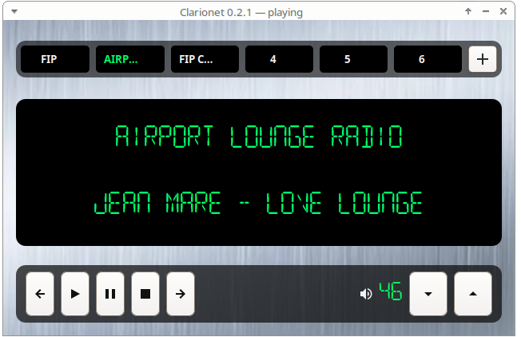

Aperçu

Ce que fait l’app
Autoradio
Interface 640×395, presets, commandes tactiles.
Presets
Presets 1–6 avec appui long pour mémoriser.
Import simple
Ajout manuel ou import via Radio‑Browser.
Affichage LED
Station et métadonnées affichées façon “LED” + défilement.
Installation
./install.shLancer
./clarionetRaccourcis
- Espace : lecture/pause
- S : stop
- Flèches gauche/droite : volume −/+
- Flèches haut/bas : station précédente/suivante
Philosophie
Clarionet reste local, sans compte ni tracking. Les données sont stockées dans ~/.config/clarionet/.
English version below
English version
Clarionet is a minimalist radio player for Linux, inspired by 1980s car radios.
- Autoradio‑style UI (fixed 640×395).
- Presets 1–6 with long‑press to save.
- Manual add or Radio‑Browser import.
- LED station/metadata display with scrolling.
Install
./install.shLaunch
./clarionetShortcuts
- Space: play/pause
- S: stop
- Left/Right: volume −/+
- Up/Down: previous/next station